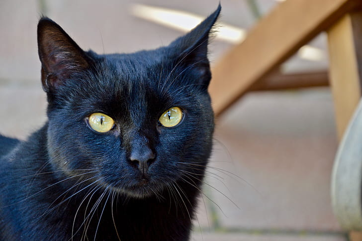

p { font-family: Arial; }
My Top 10 Favorite Cat Species
My Top 10 Favorite Cat Species: Ranked Least to Greatest
By Oluomachi Meregini (beefs0up)
Meowwwwwwwwww
Cats are my favorite animals! They're so cute, cuddly, and pawsome companions! There are so many different cat breeds I've come across.. so now I'm going to rank favorite cat breeds ranked from least to greatest.
10. Scottish Fold

9. American Shorthair

8. Persian

7. Maine Coon

6. Tuxedo

5. Ragdoll

4. Chartreux

3. Munchkin
2. Calico

1. Bombay
